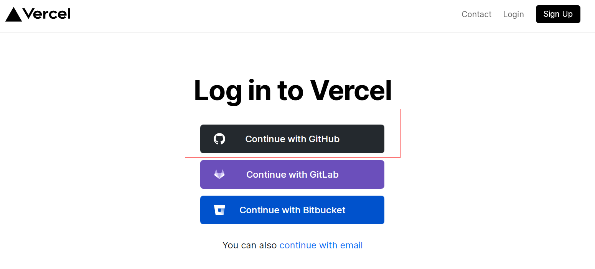
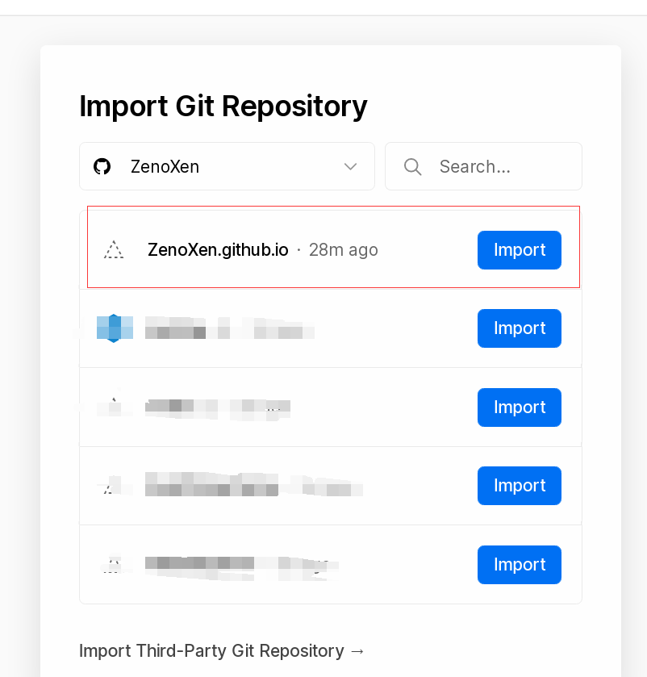
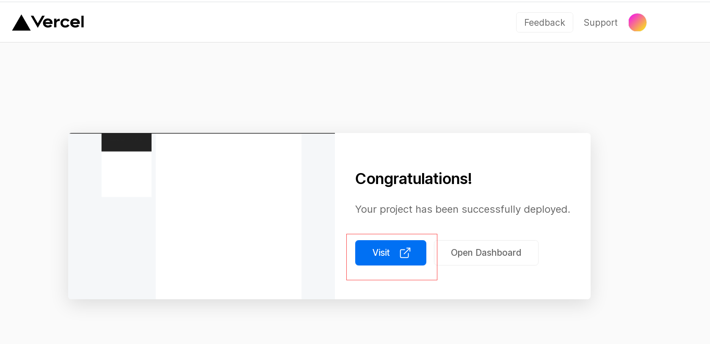
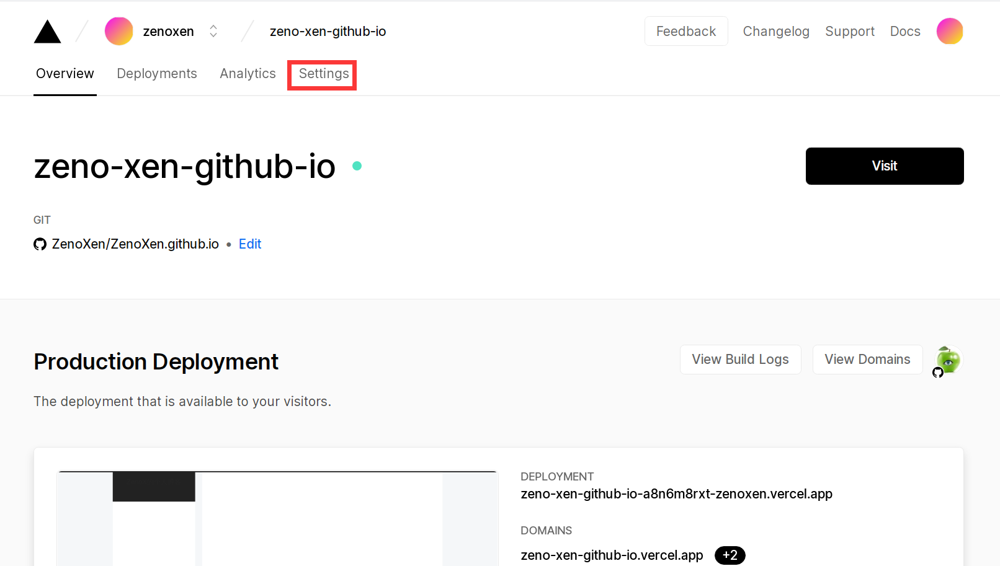
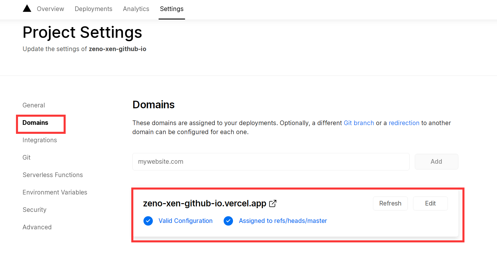

如何让hexo个人博客被搜索引擎收录
之前发过几篇博客，讲了如何使用hexo这个框架生成静态博客页面，在hexo博客的定制化这篇文章里也讲了我自己对Hexo博客是如何定制的，包括怎么启用评论、浏览量功能。
但如果大家都不知道你的博客，那评论也没啥意义了吧，这篇文章就讲一讲我自己是怎么让谷歌和百度收录我的博客的（百度最终还是没收录，不知道什么原因）。
Github Pages的一个问题
如果你直接尝试让百度去收录你的github pages的话，会发现一个问题，百度抓取不到github pages的地址，由于历史原因，github把百度的爬虫给禁用了，所以虽然github pages是真的好用，但还是得忍痛割爱，换个路子。
使用Vercel网站托管服务
有很多网站提供静态网站托管服务，我试过Coding.net和vercel这两个，coding.net的托管服务是依托于腾讯云的，很早以前是免费的，但现在貌似有一定限制了，具体什么情况我有点记不清了；后来试了vercel，它也能提供免费的静态网站托管服务，而且操作起来比coding.net舒服，目前是免费的，这是它的官网vercel。
vercel如何与github联动
进入vercel，可以使用github账号登录。

coding.net与vercel都可以从github上导入repository，但vercel比coding.net好的一点在于第一次与github关联并授权以后，你以后往github上push的任何更改，都会同步到vercel上，而coding.net并不能这样（虽然可以通过hexo的deploy配置往coding.net自动部署）。
在vercel上选择New Project，然后如果你是用Github账号登录的话，这边会显示你的所有Github仓库，选择github pages的仓库即可。

中间导入的几个步骤就不截图了，按默认设置一直点下一步即可。最后成功导入后应该可以看到congratulations，点击那个visit就可以查看托管在vercel上的网站了。

这里有一点要注意的是，虽然内容与github pages上部署的那个网页一模一样，但vercel是一个独立的副本，只不过每次github pages那个仓库更新的时候，会同步更新到vercel这边而已。
设置自己的域名
在你的vercel项目这边找到settings项。

点击Domains项，可以看到里面有一条默认的域名项，这是vercel提供给你免费使用的，如果你的项目名没改的话，一般就是github里那个仓库名为前缀，看起来怪怪的，你可以自己点击edit来修改域名记录，注意一下，vercel.app是固定的域名，不要改掉，你可以改的是这个vercel.app前面那一堆。
